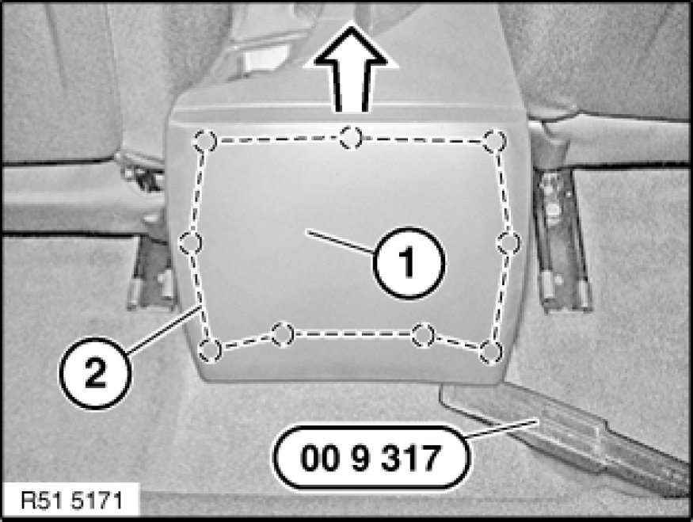
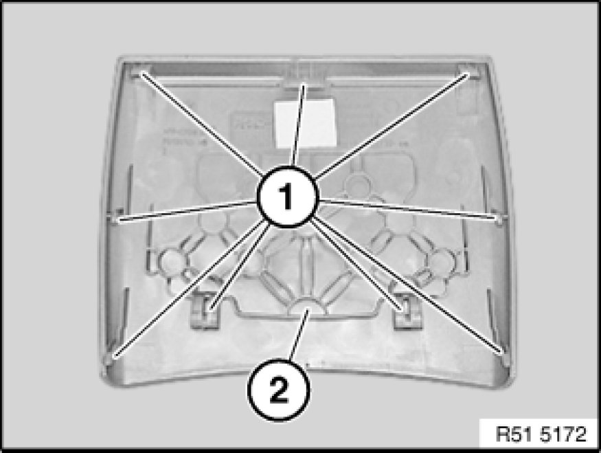
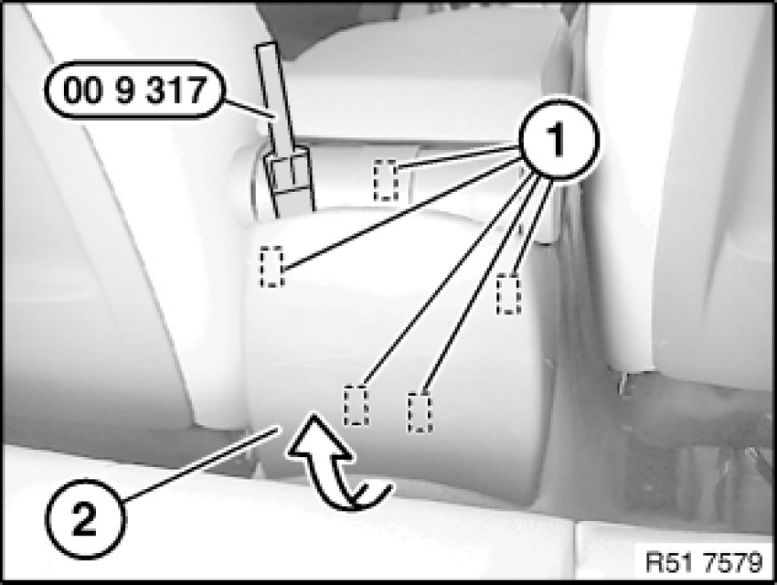
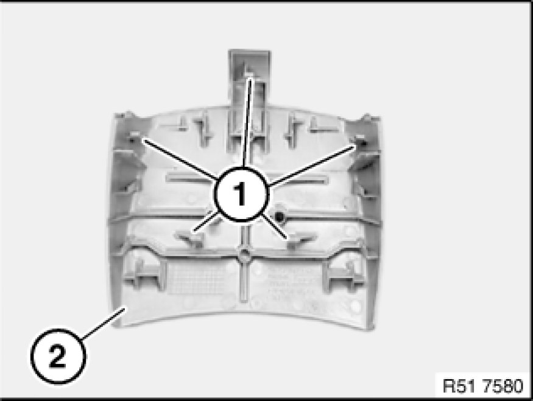

51 16 ... Removing and Installing/Replacing Trim For Storage Compartment at Rear
51 16 ... - Removing and installing/replacing trim for storage compartment at rear

Special tools required:
- 00 9 317

Version without centre armrest:
Partially fit special tool 00 9 317 as illustrated.
Lever trim (1) upwards out of catches (2) and remove.

Installation:
Catches (1) on trim (2) must not be damaged.

Version with centre armrest:
Lever out trim (2) on catches (1) with special tool 00 9 317 and remove in direction of arrow.

Installation:
Catches (1) on trim (2) must not be damaged.